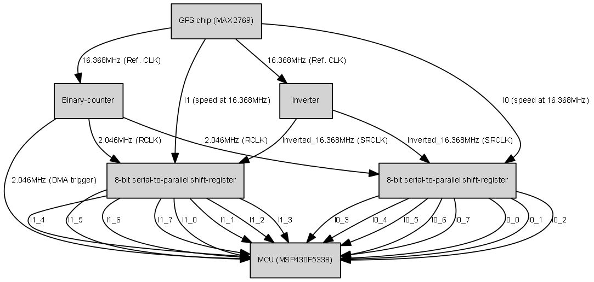

CLEON
Version 1
Cloud-Offloaded GPS Receiver
Main Page
Related Pages
Data Structures
Files
Hardware architecture
GPS H/W architecture
CLEON embeds MAX2769 from MAXIM as GPS front-end
MAX2769 generates 2bits of I (I1, I0) at a time with speed at 16.368MHz (sampling rate: 16.368MHz)
The 2 bit data is parallelized by using two 8-bit serial-to-parallel IC in order to reduce the speed down to 2.046MHz (16.368MHz/8)
Meanwhile, reference clock from MAX2769 running at 16.368MHz is being slowered down to 2.046MHz (16.368MHz/8) by using binary counter
MCU reads the parallelized I1 and I0 data with DMA support (DMA trigger: 2.046MHz (16.368MHz/8))

Generated on Tue May 28 2013 15:17:22 for CLEON by
1.8.2
 1.8.2 1.8.2
1.8.2 1.8.2